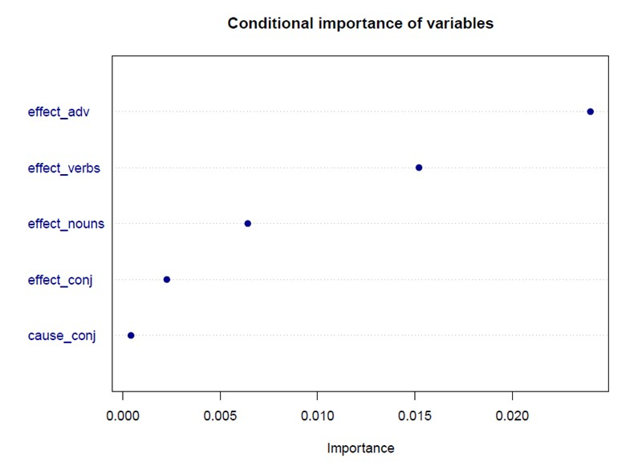
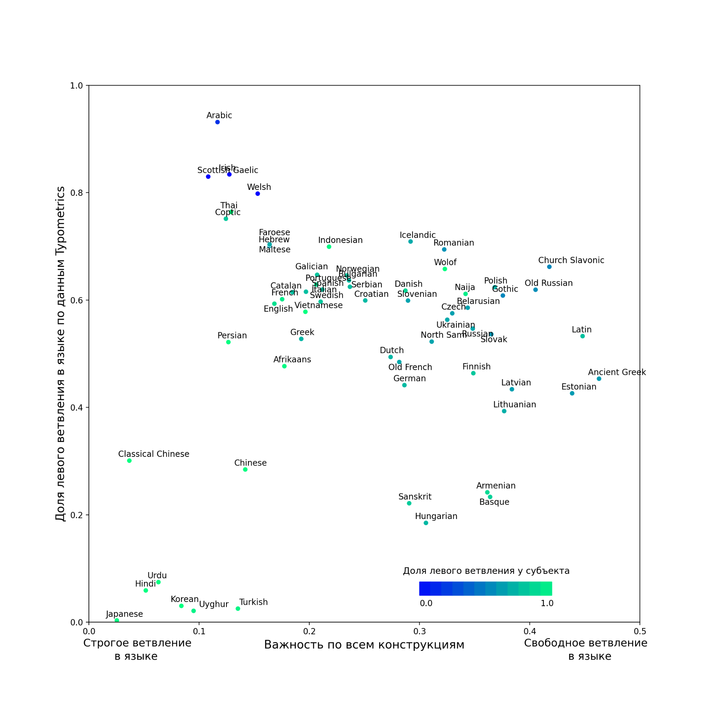

Дисциплина | Количество_текстов | Количество_токенов | empty | Средняя_длина_текста |
|---|---|---|---|---|
Экспертный корпус | ||||
Экономика | 56 | 528,542 | 9,438 | |
Менеджмент | 61 | 639,772 | 10,488 | |
Компьютерные науки | 77 | 654,252 | 8,497 | |
Политология | 73 | 624,795 | 8,559 | |
Юриспруденция | 91 | 688,763 | 7,569 | |
История | 65 | 604,378 | 9,298 | |
Всего | 423 | 3,740,502 | 8,843 | |
Экономика | 68 | 142,182 | 2,091 | |
Менеджмент | 58 | 123,259 | 2,125 | |
Компьютерные науки | 59 | 103,888 | 1,761 | |
Политология | 29 | 52,726 | 1,818 | |
Юриспруденция | 77 | 169,174 | 2,197 | |
История | 43 | 85,072 | 1,978 | |
Всего | 334 | 676,301 | 2,025 | |
6 Исследование и сравнительный анализ вариативности обозначения причинно-следственных связей в текстах обучающихся и экспертов, языковых особенностей и возможности орфокоррекции учебных текстов
6.1 Вариативность в использовании маркеров причинно-следственных связей в текстах учащихся и экспертов (Смирнова Е.А.)
В качестве материала для исследования маркеров причинно-следственных связей использовались корпусы ERAC и PECLAP , собранные в научно-учебной лаборатории учебных корпусов НИУ ВШЭ. Первый корпус включает в себя научные статьи по шести дисциплинам, опубликованные в ведущих журналах в период с 2013 по 2020 гг., входящих в базу цитирования Scopus. Второй корпус представляет собой коллекцию проектов ВКР по тем же дисциплинам, написанных на английском языке студентами четвертого курса НИУ ВШЭ в 2015–2020 гг. Информация о размере корпусов представлена в таблица 6.1.
Языковые единицы, отобранные для анализа причинно-следственных связей, были взяты из Louvain EAP Dictionary (LEAD), веб-словаря по английскому языку для академических целей для неносителей английского языка [1–3], см. таблица 6.2.
Category | Существительные | Союзы | Глаголы | Предлоги |
|---|---|---|---|---|
Причина | cause | because | contribute | because of |
factor | given that | due to | ||
ground | since | following | ||
origin | given | |||
reason | in view of | |||
root | on account of | |||
source | owing to | |||
Следствие | consequence | so | result | accordingly |
effect | so that | lead | consequently | |
implication | hence | |||
outcome | naturally | |||
result | thereby | |||
therefore | ||||
thus |
Проведенное исследование выявило системные различия в использовании маркеров причинно-следственных связей в академических текстах учащихся и профессиональных авторов. Статистический анализ с применением критерия хи-квадрат показал, что в целом маркеры причины значимо чаще употребляются студентами, причем наиболее существенные различия наблюдаются в экономике. Однако за этим количественным преобладанием скрывается качественное различие: учащиеся демонстрируют склонность к ограниченному, шаблонному использованию узкого набора лексем (например, существительного «factor» и предлога «due to» в составе клишированной конструкции «due to the fact that»), в то время как эксперты пользуются более широким репертуаром синонимичных средств. Что касается маркеров следствия, то их общая частотность оказалась выше в экспертном корпусе, хотя данная тенденция варьировалась в зависимости от дисциплины. Качественный анализ выявил и функциональные различия: эксперты часто используют существительные следствия во введениях и обзорах литературы для формулирования целей и обобщения существующих исследований, тогда как студенты склонны применять их преимущественно в выводах для описания результатов. Кроме того, учащиеся злоупотребляют базовыми союзами, такими как «so», в ущерб более конвенциональным вариантам, что указывает на недостаточное владение жанровыми и стилистическими нормами.
Для комплексной оценки вклада различных лингвистических признаков была построена биномиальная логистическая регрессионная модель, предсказывающая принадлежность текста к учебному или экспертному корпусу. Финальная модель, прошедшая оптимизацию, включила пять наиболее значимых предикторов и продемонстрировала высокую дискриминативную способность. Анализ выявил устойчивую обратную связь: более высокая частотность маркеров следствия (наречий, глаголов, существительных и союзов) и союзов причины достоверно ассоциирована с профессиональными текстами. Ранжирование переменных методом случайных лесов подтвердило, что наибольший вклад в различение групп вносят наречия и глаголы следствия (см. рисунок 6.1).

Полученные результаты подчеркивают необходимость целенаправленного обучения вариативному и стилистически адекватному использованию маркеров причинно-следственных связей в курсах академического письма
6.2 Вариативность в согласовании подлежащего и сказуемого в академических текстах носителей и неносителей английского языка по различным дисциплинам (Смирнова Е.А.)
Настоящее исследование посвящено анализу вариативности в согласовании по числу между подлежащим и сказуемым в профессиональных академических текстах на английском языке. Фокус работы сосредоточен на четырех проблемных классах существительных, для которых характерно рассогласование между грамматической и понятийной числовыми характеристиками: собирательные существительные (group, team), неисчисляемые существительные, обозначающие абстрактные понятия (research), исчисляемые существительные с формой множественного числа, лишенной стандартной морфологической маркировки (data, media), и существительные в единственном числе, оканчивающиеся на -s (series, dynamics). Как отмечают Байбер и др. [4] и Сельсе-Мурсия и Ларсен-Фриман [5], подобные существительные демонстрируют нестабильные паттерны согласования, что может быть обусловлено синтаксической сложностью, семантической множественностью и отсутствием четких перцептивных референтов [6; 7].
Актуальность работы определяется тем, что, несмотря на существующие исследования вариативности согласования в речи изучающих язык и в различных вариантах английского языка [8; 9] данный феномен остается малоизученным в контексте профессионального академического письма, где соблюдение дисциплинарных и жанровых конвенций имеет paramount importance. Более того, предыдущие работы фрагментированы и не дают целостной картины влияния лингвистического бэкграунда автора и дисциплинарной принадлежности текста. Таким образом, данное исследование ставило перед собой цель восполнить этот пробел, отвечая на три ключевых вопроса: во-первых, существуют ли различия в паттернах согласования у носителей и неносителей английского языка; во-вторых, наблюдается ли вариативность согласования между точными и гуманитарными дисциплинами; и в-третьих, какие синтаксические факторы определяют вариативность в выборе числа глагола.
Для достижения поставленных целей сотрудниками пермской части НУЛ учебных корпусов был составлен специализированный корпус научных статей общим объемом 4,4 миллиона слов, опубликованных в рецензируемых журналах за период с 2022 по 2024 год. Корпус был стратифицирован по двум основным параметрам: дисциплинарная семья и лингвистический бэкграунд автора. Авторы классифицировались как носители или неносители английского языка на основе анализа их имен, аффилиаций и образовательной истории, что является общепринятой практикой в подобных корпусных исследованиях [10; 11]. Для исключения смешанного влияния, из анализа были исключены статьи с соавторством, где авторы принадлежали к разным группам. Каждая дисциплинарная ячейка содержала равное количество текстов от носителей и неносителей, что обеспечило сбалансированность дизайна. Информация о размере корпуса представлена в таблица 6.3.
Disciplinary_family | Field | Discipline | Number_of_texts_NS | Number_of_texts_NNS | Number_of_words_NS | Number_of_words_NNS |
|---|---|---|---|---|---|---|
Soft sciences | Arts and humanities | History | 24 | 24 | 236,244 | 203,209 |
Philosophy | 24 | 24 | 208,178 | 204,579 | ||
Literature | 24 | 24 | 183,320 | 179,303 | ||
Total | 72 | 72 | 627,742 | 587,091 | ||
Social sciences | Linguistics | 24 | 24 | 223,294 | 225,798 | |
Law | 24 | 24 | 359,812 | 290,629 | ||
Political science | 24 | 24 | 206,931 | 200,570 | ||
Total | 72 | 72 | 790,037 | 716,997 | ||
Soft total | 144 | 144 | 1,417,779 | 1,304,088 | ||
Hard sciences | Life sciences | Chemistry | 24 | 24 | 144,373 | 143,022 |
Biology | 24 | 24 | 158,863 | 154,966 | ||
Medicine | 24 | 24 | 113,725 | 111,624 | ||
Total | 72 | 72 | 416,961 | 409,612 | ||
Physical sciences | Astronomy | 24 | 24 | 135,594 | 121,985 | |
Geology | 24 | 24 | 172,028 | 149,607 | ||
Physics | 24 | 24 | 176,049 | 127,601 | ||
Total | 72 | 72 | 483,671 | 399,193 | ||
Hard total | 144 | 144 | 900,632 | 808,805 | ||
Corpus total | 576 | 4,431,304 |
Отобранные для анализа существительные соответствовали критериям частотности в академическом дискурсе и потенциальной вариативности в согласовании. Корпус был обработан с помощью программного обеспечения AntConc для первоначального поиска контекстов, после чего был проведен тщательный ручной анализ для идентификации случаев согласования и аннотирования синтаксических признаков. Для каждого случая фиксировались число глагола, а также синтаксические переменные: наличие детерминатива, количество препозитивных модификаторов, наличие of-фразы и дистанция между подлежащим и сказуемым.
Для статистической обработки данных использовалась комбинация методов: для анализа бинарных предикторов применялся расчет φ-коэффициента с интерпретацией эффекта по Коэну [12], для непрерывных переменных использовался U-критерий Манна-Уитни, а для многомерного анализа влияния нескольких факторов на согласование с существительным data была применена биномиальная логистическая регрессия с пошаговым исключением незначимых переменных в R.
Анализ выявил системные, хотя и не всегда статистически значимые, различия между группами авторов. Носители языка продемонстрировали бóльшую вариативность, особенно в «мягких» науках, где в их текстах по литературе было зафиксировано 63% случаев pluralia tantum с существительным group. Это согласуется с выводами Фернандес-Пены [8] о большей гибкости носителей в использовании понятийного согласования. Однако φ-коэффициент не показал значимой связи, что указывает на сложность данного фактора. Для существительных media и data была обнаружена контрастная картина: носители преимущественно использовали media с единственным числом, в то время как неносители – с множественным. Этот результат противоречит данным Байбера и др. [4], но подтверждает тезис Моралло [13] о реклассификации media как singularia tantum носителями языка. Напротив, для data неносители чаще, чем носители, использовали форму единственного числа. Паттерны для существительных на -s (series, dynamics) оказались разнонаправленными. Носители чаще использовали series с глаголом в единственном числе, тогда как неносители демонстрировали обратную тенденцию. Для dynamics, напротив, неносители чаще выбирали единственное число. Это противоречит исследованию Аль-Шаера [14], где носители последовательнее трактовали подобные существительные как сингулярные. Таким образом, носители языка действительно демонстрируют более вариативное и, вероятно, более идиосинкразическое использование согласования, что может объясняться опорой на семантические и контекстуальные факторы, в то время как неносители чаще следуют формальным, иногда упрощенным, грамматическим правилам [6]. Однако отсутствие статистической значимости в большинстве случаев указывает на то, что фактор лингвистического бэкграунда не является определяющим сам по себе и его влияние опосредовано другими переменными.
Дисциплинарный фактор оказался статистически значимым и последовательным для трех из четырех классов существительных. Гуманитарные науки значимо чаще использовали множественное число с коллективными существительными по сравнению с точными. Аналогичная, хотя и менее выраженная, тенденция была выявлена для существительного data. Наиболее сильная дисциплинарная ассоциация была обнаружена для существительных на -s: гуманитарные науки последовательно предпочитали множественное число.
Результаты показали, что синтаксический контекст оказывает избирательное, но важное влияние на выбор числа глагола. Наиболее сильные эффекты были зафиксированы для коллективных существительных. Примеры с множественным числом глагола имели значительно большую дистанцию между подлежащим и сказуемым. Это подтверждает гипотезу Левина [15] о том, что увеличение синтаксической сложности и расстояния усиливает влияние семантической множественности коллективных существительных. Наличие of-фразы продемонстрировало сильную положительную связь с множественным числом. Конструкции типа a group of researchers семантически смещают фокус на множественность элементов, что и отражается в выборе глагола. Для существительного data слабая, но значимая связь показала, что большее число препозитивных модификаторов ассоциируется с единственным числом. Это можно объяснить тем, что развернутая номинативная группа чаще воспринимается как единый, специфицированный блок информации. Наличие детерминатива было значимо связано с множественным числом. Возможно, определенный артикль the указывает на конкретный, ограниченный набор данных, который легче концептуализировать как совокупность дискретных единиц. Ни один из анализируемых синтаксических факторов не показал статистически значимой связи с согласованием для существительных на -s.
Критическим результатом стала попытка построить комплексную логистическую регрессионную модель для предсказания согласования с data, которая показала низкую прогностическую силу. Анализ методом случайных лесов также подтвердил незначительный вклад включенных переменных. Это ключевой вывод, который указывает на то, что синтаксические факторы сами по себе не могут адекватно объяснить вариативность. Авторы справедливо предполагают, что для понимания механизмов согласования необходимым является учет семантических и дискурсивных факторов, которые не были включены в текущую модель.
Проведенное исследование демонстрирует, что вариативность в согласовании подлежащего и сказуемого в академическом дискурсе является сложным, многогранным явлением, определяемым взаимодействием нескольких факторов. Лингвистический бэкграунд автора создает определенные тенденции, но не является решающим детерминантом, что подчеркивает важность профессиональной академической социализации для неносителей языка. Дисциплинарная принадлежность оказывается более устойчивым и значимым предиктором, отражая глубинные эпистемологические и риторические различия между точными и гуманитарными науками. Синтаксический контекст, особенно дистанция между подлежащим и сказуемым и наличие of-фразы для коллективных существительных, играет важную, но ограниченную роль, что особенно ярко видно на примере неудачной регрессионной модели для data.
Практическая значимость исследования заключается в том, что его результаты могут быть использованы для совершенствования методики обучения академическому письму, обеспечивая более тонкое и контекстуально обусловленное объяснение правил согласования для изучающих английский язык как иностранный.
6.3 Новые корпусы и авторская позиция в текстах, сгенерированных ИИ (Туляков Д.С.)
6.3.1 Корпус устных защит проектов защиты ВКР на английском студентов-лингвистов НИУ ВШЭ
Для дальнейшего исследования авторской позиции в и особенностей L2 академической речи был создан корпус устной речи защит проектов ВКР на английском языке студентов НИУ ВШЭ-Пермь образовательной программы “Иностранные языки и межкультурная коммуникация в бизнесе”. Защиты были записаны и траскрибированы, а затем проверены стажерами-исследователями НУЛ. Корпус полностью анонимизирован и содержит метаданные об оценке, полученной студентом за презентацию. Корпус насчитывает 61 текст и приблизительно 32 тыс. слов.
Корпус был создан с учетом действующих правовых норм, и в данный момент он на итоговой стадии оформления как РИД (номер заявки 0000-2726; номер РИД в СУРИД 8.0146-2025).
В данный момент стажеры-исследователи продолжают работать над корпусом и вручную аннотируют тексты корпуса по риторическим шагам (например, Orientation, Rationale, Framework). Корпус также апробируется в исследовании стажера-исследователя Федоровой А.Д. “Анализ маркеров дискурса в защитах проектов ВКР студентов”, представленном на корпусном симпозиуме “Корпусная лингвистика и дискурс-анализ”:
“Изучение маркеров дискурса привлекает многих исследователей. Однако небольшое количество работ посвящено исследованию этого явления в устной академической речи. Данная работа представляет собой анализ использования маркеров дискурса в корпусе устных презентаций проектов выпускных квалификационных работ студентов четвертого курса образовательной программы «Иностранные языки и межкультурная коммуникация в бизнесе». В рамках данной работы предполагается представить результаты анализа частотности маркеров дискурса и их функции. Анализ частотности был проведен с помощью корпусного менеджера AntConc. Также была использована функциональная классификация Лоретты Фанг и Рональда Картера (2007). Группа маркеров, указывающая на причинно-следственные связи в предложении или тексте, стала самой многочисленной и составила 70%. Второй по величине группой стали маркеры, отвечающие за управление структурой текста, – 23,8%. Число когнитивных маркеров (сигнализирующих о процессе мышления говорящего или поясняющих его мысли), составило 6 %, самой малочисленной категорией стала группа маркеров, указывающих на процесс взаимодействия говорящего и слушающего – 0,2%. Самыми высокочастотными маркерами стали also (148), but (57) и now (51). Данные результаты показывают, что студенты в своих защитах больше используют маркеры, относящиеся к неакадемическому дискурсу. Академические маркеры дискурса, напротив, использовались реже. Так маркер however использовался тридцать два раза, finally – двадцать два раза, moreover – девять. Таким образом можно сделать вывод о том, что академическая речь студентов обладает характерными чертами разговорного дискурса.”
6.3.2 Корпус сгенерированных ИИ аннотаций исследовательских статей и сопоставительное исследование маркеров значимости в аннотациях, написанных человеком и сгенерированных ИИ
Введение. Появление и стремительное развитие инструментов на базе генеративного искусственного интеллекта (ИИ) существенно повлияло на практики написания текстов как студентов, так и исследователей. Согласно опросу, проведённому в 2024 году, 86% студентов по всему миру используют ИИ-инструменты для выполнения различных задач, включая проверку грамматики, резюмирование и перефразирование документов, а также создание черновиков научных работ (Digital Education Council, 2024); более свежие отчёты свидетельствуют о том, что использование ИИ среди студентов становится ещё более распространённым. Исследователи также всё чаще применяют ИИ для повышения качества научного письма, увеличения эффективности и поддержки саморегулируемого обучения, а всё большее число научных журналов допускает заявленное использование ИИ в своих правилах подачи материалов (например, Elsevier и APA). Этот сдвиг вызвал всплеск публикаций, посвящённых этическим аспектам написания текстов с помощью ИИ, включая вопросы авторства, научной добросовестности и прозрачности. Учитывая темпы внедрения, можно предположить, что использование генеративных ИИ-инструментов в академической среде, особенно в научном письме, будет продолжать расти.
В этом контексте важно понять, какие задачи академического письма генеративный ИИ может поддерживать без ущерба для целостности и качества научных текстов. Один из способов получить такое понимание – изучить особенности ИИ-сгенерированных текстов путём их сравнения с аналогичными текстами, написанными без помощи ИИ. Поскольку большие языковые модели (LLMs), лежащие в основе генеративных ИИ-инструментов, обучаются на наборах данных, включающих разнообразные текстовые источники, можно ожидать, что тексты, созданные ИИ (например, части научной статьи), будут демонстрировать характерные черты релевантных текстов из обучающего корпуса. Однако конкретные способы, с помощью которых ИИ-сгенерированные академические тексты сходны или отличаются от текстов, написанных людьми в рамках определённого жанра, заслуживают внимательного изучения, поскольку это позволяет лучше понять сильные и слабые стороны ИИ как помощника в научном письме.
Среди множества характеристик академического письма, которые могут быть затронуты использованием ИИ, особенно важным является промоциональный язык. Под промоциональным языком понимаются лингвистические выборы и риторические стратегии, направленные на формирование положительного восприятия научного вклада со стороны аудитории [16]. Недавние исследования выявили тенденцию к увеличению объёма промоционального языка, используемого исследователями в статьях и грантовых заявках. В качестве причин указываются высокая конкуренция за внимание читателей в условиях информационной перегрузки, а также борьба за финансирование и возможность публикации в престижных журналах. Исследования показывают, что с течением времени частота использования «раздувающих» лексических единиц (например, таких прилагательных, как critical, important или original) увеличивается как внутри отдельных дисциплин – медицины [16; 17], прикладной лингвистики [18; 19], биомедицинских наук [20], – так и в академии в целом [21; 22]. Эта тенденция особенно заметна в аннотациях к научным статьям и грантовым заявкам, где авторы не только резюмируют свои исследования, но и активно их продвигают [23]. Такой подход оказывается эффективным: статьи, в аннотациях которых используется больше промоционального языка, получают больше внимания и чаще цитируются.
Хотя предыдущие исследования изучали промоциональный язык в аннотациях, написанных людьми, мало известно о том, как в этом отношении выглядят аннотации, созданные ИИ. Цель настоящего исследования – выяснить, подчеркивают ли ИИ-сгенерированные аннотации к академическим статьям важность исследования в той же степени, что и аннотации, написанные людьми. Поскольку резюмирование является одной из самых распространённых задач, выполняемых с помощью генеративного ИИ, можно предположить, что многие исследователи, использующие ИИ в качестве помощника, применяют функцию резюмирования при работе над аннотациями. Если внедрение ИИ в академическую среду будет продолжаться, как прогнозируется, всё большее число аннотаций будет хотя бы частично сгенерировано. И авторам, использующим ИИ для написания аннотаций, и читателям этих аннотаций будет полезно знать, следует ли ожидать от ИИ дальнейшего преувеличения значимости исследования (которая, как показывают исследования, уже может быть завышена).
Сравнительные исследования академических текстов, написанных людьми и ИИ. Большинство сравнительных работ сосредоточены на студенческих эссе. Исследования показывают, что рецензенты часто не могут отличить тексты, написанные студентами, от тех, что созданы ИИ, а иногда даже оценивают ИИ-эссе выше. Это свидетельствует о поверхностном сходстве.
Тем не менее, ИИ-эссе отличаются ограниченным набором стратегий вовлечения, меньшим количеством выражений позиции и риторической гибкости. Они демонстрируют слабую авторскую позицию, низкое разнообразие лексики и упрощённую структуру.
В области научных текстов различия также заметны. Например, эксперты в медицине легко распознают ИИ-сгенерированные статьи и оценивают их ниже, тогда как лингвисты демонстрируют низкую точность.
ИИ-аннотации следуют стандартной структуре, но отличаются шаблонностью, меньшей вариативностью и бедностью терминологии. Они проще, короче и менее точны, хотя читаются легче.
Интересно, что по некоторым параметрам ИИ-аннотации приближаются к человеческим , но используют меньше абстрактного и убедительного языка, что противоречит другим данным.
В целом, ИИ способен имитировать академические нормы, но уступает в нюансах, точности и адаптивности. Настоящее исследование дополняет литературу, анализируя, насколько ИИ-аннотации отражают акцент на важности, характерный для текстов, написанных людьми.
Промоциональный язык и маркеры важности в академическом письме. Несмотря на распространённое мнение об объективности научного письма, исследования показывают, что академический дискурс часто носит риторический и промоциональный характер. Учёные [24; 25; Fairclough1993?] подчёркивают влияние институциональных и дисциплинарных факторов, а также стремление убедить читателя в ценности исследования, особенно в условиях конкуренции за финансирование и публикации.
Аннотации – жанр, где промоциональный язык особенно заметен. Они не только резюмируют содержание, но и продвигают работу. Исследования фиксируют рост использования таких выражений в аннотациях, особенно в грантовых заявках и медицинских статьях, что отражает тенденции «экономики внимания».
Анализ промоционального языка ведётся как риторически, так и корпусно. Риторические исследования изучают оценочные выражения, маркеры позиции и самопрезентации [18], часто опираясь на жанровую модель Swales. Корпусные исследования фокусируются на частотности лексем типа important, novel, critical и их распределении по дисциплинам [20; 22].
Особую роль играют маркеры важности – лексико-грамматические средства, подчёркивающие значимость информации. Они активно изучаются в устных академических жанрах и аннотациях, где входят в категорию «hyping» [Millar2022?]. Их частотность растёт, особенно в гуманитарных и социальных науках.
Таким образом, промоциональный язык и маркеры важности – ключевые элементы академического письма, и важно понять, как ИИ воспроизводит или трансформирует эти практики.
Теоретическая модель «позиции» (stance). В данном исследовании маркеры важности рассматриваются как проявления авторской позиции. Согласно [4], позиция – это выражение чувств, оценок и установок автора. В академическом дискурсе такие выражения играют важную роль в аргументации, выстраивании доверия и взаимодействии с читателем.
В модели [26] маркеры важности входят в группу оценочных маркеров, наряду с хеджами, усилителями и самоупоминаниями. Они выражают аффективную составляющую позиции, демонстрируя значимость исследуемого объекта.
Модель [4] классифицирует маркеры важности как выражения оценочной позиции, реализуемые через наречия, глаголы, прилагательные, существительные с дополнениями и модальные глаголы. Эти маркеры – лексические единицы из семантической области «важности», хорошо подходящие для корпусного анализа по частотности и контексту употребления.
Данные. Для данного исследования были собраны два корпуса: корпус аннотаций, написанных людьми (HUMabs) и корпус соответствующих аннотаций, сгенерированных ИИ (AIabs). Чтобы обеспечить разнообразие, HUMabs включает 218 аннотаций к статьям, опубликованным в 32 ведущих журналах по 8 дисциплинам (4 естественнонаучные и 4 гуманитарные) в период с 2016 по 2020 год – до широкого распространения генеративного ИИ.
Корпус AIabs был создан с помощью DeepSeek. Все статьи были предварительно обработаны: сохранены только заголовок и основное содержание, без авторов, аннотаций, ссылок и дополнительных разделов. Каждая статья загружалась в отдельный чат с запросом: «Напиши аннотацию для этой статьи для подачи в [название журнала]». Все аннотации AIabs были сгенерированы в августе 2025 года содержаться в таблица 6.4:
Discipline | HUMabs | AIabs | |||
|---|---|---|---|---|---|
Discipline (hard/soft) | No files | Median words | Total words | Median words | Total words |
Chemistry (h) | 34 | 144.0 | 4,850 | 150.5 | 4,906 |
Physics (h) | 34 | 120.0 | 4,377 | 119.0 | 4,299 |
Mathematics (h) | 28 | 106.5 | 3,101 | 115.5 | 3,722 |
Engineering (h) | 34 | 176.5 | 6,006 | 181.0 | 5,912 |
Business (s) | 20 | 143.0 | 3,086 | 146.5 | 2,991 |
Linguistics (s) | 22 | 165.0 | 3,885 | 158.5 | 3,582 |
History (s) | 21 | 152.0 | 3,572 | 150.0 | 3,520 |
Political Science (s) | 25 | 152.0 | 3,903 | 167.0 | 4,193 |
All corpus | 218 | 147.0 | 32,780 | 150.5 | 33,125 |
Отбор маркеров важности. Список маркеров важности, использованных в исследовании, основан на работе [Wang2025?], изучавших их употребление в корпусе из 120 презентаций «Three Minute Thesis». Как и в их исследовании, маркеры были классифицированы по частям речи, что соответствует нашему подходу к ним как к лексическим проявлениям авторской позиции. Это также позволяет анализировать типичные грамматические конструкции с маркерами (например, существительное + предлог), в соответствии с моделью [4].
Для расширения списка были учтены дополнительные исследования [26], а также данные из тезаурусов Merriam-Webster и Dictionary.com. В список включались только те единицы, которые выражают именно важность, исключая маркеры новизны или полезности. После исключения лексем, не встречающихся в корпусах, итоговый список составил 72 маркера: 10 глаголов, 20 существительных, 32 прилагательных и 10 наречий.
Аналитическая процедура. Для анализа был использован Python-скрипт, который проводил лемматизацию текстов и рассчитывал абсолютные и нормализованные частоты всех четырёх категорий маркеров важности. Далее частоты сравнивались для выявления статистически значимых различий – как в целом, так и по категориям и отдельным леммам. В качестве метрик использовались логарифмическое правдоподобие (LL) и процентное отклонение (%DIFF – сравнение AIabs с HUMabs).
Дополнительно анализ проводился отдельно для естественнонаучных и гуманитарных дисциплин, чтобы выявить, в каких областях различия в частоте маркеров выражены сильнее.
Результаты: Сравнение маркеров важности в AIabs и HUMabs по категориям и типам дисциплин. Сравнение частотности маркеров важности в аннотациях, созданных ИИ (AIabs), и написанных людьми (HUMabs), как в целом, так и по категориям, показало, что в AIabs их значительно больше. Особенно выражено это в категориях прилагательных и наречий, тогда как различия в глаголах и существительных статистически незначимы. Наиболее заметное отличие – прилагательные, которые встречаются в AIabs более чем в три раза чаще, см. таблица 6.6.
| importance marker | AIabs | HUMabs | %DIFF | LL | p |
|---|---|---|---|---|---|
| adjectives | 8935.85 | 5369.128 | 66.43 | 29.60 | < 0.001 |
| adverbs | 1962.26 | 610.12 | 221.62 | 25.62 | < 0.001 |
| nouns | 4769.81 | 4331.91 | 10.11 | 0.4 | n.s. |
| verbs | 1388.68 | 1494.814 | -7.1 | 0.13 | n.s |
| all | 17056.6 | 11805.98 | 44.47 | 31.64 | < 0.001 |
При рассмотрении дисциплин отдельно (естественные и гуманитарные науки) наблюдается аналогичная тенденция, но с различиями в масштабах, см. таблица 6.6:
importance marker | AIabs | HUMabs | %DIFF | LL | p |
|---|---|---|---|---|---|
in hard disciplines | |||||
adjectives | 8,068.37 | 4,636.10 | 74.03 | 30.92 | < 0.001 |
adverbs | 1,645.52 | 218.17 | 654.23 | 40.73 | < 0.001 |
nouns | 3,397.21 | 3,163.52 | 7.39 | 0.27 | n.s. |
verbs | 1,751.69 | 1,799.96 | -2.68 | 0.02 | n.s. |
all | 14,862.78 | 9,817.83 | 51.39 | 34.21 | < 0.001 |
in soft disciplines | |||||
adjectives | 10,079.80 | 6,299.32 | 60.01 | 29.00 | < 0.001 |
adverbs | 2,379.95 | 1,107.57 | 114.88 | 15.65 | < 0.001 |
nouns | 6,579.87 | 5,814.76 | 13.16 | 1.50 | n.s. |
verbs | 909.98 | 1,107.57 | -17.84 | 0.60 | n.s. |
all | 19,879.60 | 14,329.23 | 38.73 | 29.80 | < 0.001 |
В обеих группах дисциплин статистически значимые различия между AIabs и HUMabs наблюдаются только в категориях наречий, прилагательных и общего количества маркеров. Однако степень различий варьируется. Это поднимает вопрос о том, насколько точно ИИ отражает дисциплинарные особенности использования маркеров важности.
Так, в HUMabs гуманитарных дисциплин наречия используются значительно чаще, чем в естественных (1108 против 218 слов на миллион; %DIFF = +408%; LL = 10.86; p < 0.001). В AIabs это различие сглаживается и становится статистически незначимым (2380 против 1646; %DIFF = +45%; LL = 2.26; p = 0.13).
Аналогичная, но менее выраженная картина наблюдается для прилагательных: в HUMabs гуманитарных дисциплин они встречаются чаще (6299 против 4636; %DIFF = +36%; LL = 4.44; p = 0.035), но в AIabs разница снижается до +25% и становится лишь погранично значимой (10080 против 8068; LL = 3.9; p = 0.048). Это свидетельствует о том, что ИИ снижает дисциплинарную вариативность в использовании маркеров важности.
Если рассматривать все маркеры вместе, различия сохраняются: в HUMabs гуманитарных дисциплин их частота выше (14329 против 9818; %DIFF = +46%; LL = 14.38; p < 0.001), а в AIabs – тоже значимо выше, но с меньшим разрывом (19880 против 14863; %DIFF = +34%; LL = 10.44; p = 0.001). Таким образом, ИИ частично нивелирует дисциплинарные различия, но не устраняет их полностью.
Результаты: Распределение маркеров важности в AIabs и HUMabs. Поскольку предыдущие результаты указывают на «гомогенизирующий» эффект ИИ в использовании маркеров важности, в этом разделе рассматривается, проявляется ли он также в распределении маркеров по отдельным аннотациям, см. таблица 6.7.
| AIabs | HUMabs | AIabs(soft) | HUMabs(soft) | AIabs(hard) | HUMabs(hard) | |
|---|---|---|---|---|---|---|
| mean | 2.59 | 1.78 | 3.24 | 2.35 | 2.15 | 1.38 |
| st. dev. | 2.2 | 1.92 | 2.21 | 2.02 | 2.08 | 1.74 |
| CV | 0.8474 | 1.08 | 0.68 | 0.86 | 0.97 | 1.26 |
| ZMA | 43/218 | 64/218 | 9/88 | 16/88 | 34/130 | 48/130 |
| ZMA, % | 19.7 | 29.4 | 10.2 | 18.2 | 26.2 | 36.9 |
Данные показывают, что коэффициент вариации в AIabs ниже, чем в HUMabs, что означает более равномерное распределение маркеров в аннотациях, созданных ИИ. Это подтверждается тем, что доля аннотаций без маркеров важности в AIabs всегда ниже.
Для оценки разнообразия маркеров был рассчитан коэффициент типа к токену (TTR), основанный на количестве уникальных лемм и общем числе их употреблений, см. таблица 6.8:
| AIabs | HUMabs | AIabs(soft) | HUMabs(soft) | AIabs(hard) | HUMabs(hard) | |
|---|---|---|---|---|---|---|
| type | 64 | 63 | 50 | 52 | 51 | 42 |
| token | 565 | 387 | 285 | 207 | 280 | 180 |
| TTR | 0.11 | 0.16 | 0.18 | 0.25 | 0.18 | 0.23 |
TTR оказался выше в HUMabs, что свидетельствует о большем лексическом разнообразии: люди используют более широкий набор маркеров важности, чем ИИ.
Промежуточные выводы. Анализ частотности маркеров важности показал, что аннотации, созданные ИИ, содержат их значительно больше, чем тексты, написанные людьми – особенно в категориях прилагательных и наречий. Это свидетельствует о склонности ИИ усиливать риторическую значимость исследования. При этом различия между дисциплинами (гуманитарные и естественные науки) в ИИ-аннотациях выражены слабее, чем в аннотациях, написанных людьми, что указывает на тенденцию к нивелированию стилевых особенностей разных научных областей.
Дополнительный анализ показал, что ИИ не только распределяет маркеры важности более равномерно по аннотациям, но и использует их менее разнообразно. В то время как авторы-человеки демонстрируют более широкий лексический репертуар, ИИ опирается на ограниченный набор выражений. Это может свидетельствовать о формализованном подходе ИИ к академическому стилю, что важно учитывать при использовании генеративных моделей в научной коммуникации.
6.4 Разбор языка фейковых новостей на английском языке: От методов убеждения к прагматическим механизмам (Трнавац Р.)
6.4.1 Введение
Данное исследование вносит вклад в изучение языка фейковых новостей, сосредоточившись на пропаганде как типе фейковых новостей, который поддерживает и продвигает определённую сторону или точку зрения путём намеренного упущения важной контекстуальной информации [27] фейковые новости типа III в их типологии). С точки зрения языка, пропаганда обладает интересными убедительными качествами: упущение истины идёт рука об руку со стратегическими лингвистическими ходами, призванными привлечь внимание читателя к предпочитаемым автором нарративам и политическим идеологиям. Зачастую это делается неявно, а не явно, путём использования базовых прагматических механизмов и творческого расширения смыслового потенциала языковых средств для манипулирования аудиторией. Цель нашего исследования — точно определить, как выглядят эти лингвистические стратегии и как они способствуют убедительному дискурсу в пропаганде. В частности, наше исследование направляется двумя исследовательскими вопросами.
- Как используются и распространены методы убеждения в англоязычных пропагандистских текстах?
- Каковы основные лингвистические и прагматические механизмы каждого из методов?
Для достижения наших целей мы возьмем за отправную точку существующую модель убеждения, разработанную Пискорским [28], которая была успешно применена в работе Да Сан Мартино и др. [29] для детального исследования убеждения в пропаганде. Хотя эта модель в первую очередь предназначена для применения в компьютерных и социальных науках, здесь мы используем ее в качестве первого шага к целенаправленному лингвистическому анализу методов убеждения, где характер этих методов (например, «Апелляция к авторитету», «Выдвижение сомнений», «Размахивание флагом») поможет нам определить конкретные ресурсы, на которых следует сосредоточиться (например, ресурсы для атрибуции в «Апелляции к авторитету»), одновременно позволяя дополнить модель дальнейшими исследованиями в области лингвистики и прагматики. Таким образом, мы можем добавить к нашей системе ещё один аналитический уровень, более серьёзно относящийся к языку, способствуя тем самым усилиям по автоматическому выявлению фейковых новостей и повышению уровня медиаграмотности, где язык играет ключевую роль. Данные для исследования взяты из корпуса Fakespeak-ENG, а именно из тщательно отобранной выборки пропагандистских текстов, представляющих два различных жанра: социальные сети, с одной стороны, и новостные статьи и записи в блогах, с другой.
6.4.2 Пропаганда и убеждение
По мнению Джоуэтт и О’Доннелл [30: 7], «пропаганда — это преднамеренная, систематическая попытка формировать восприятие, манипулировать когнитивными процессами и направлять поведение для достижения реакции, способствующей достижению желаемых целей пропагандиста», — определение, которое соответствует нашему собственному пониманию пропаганды, данному во введении. В этом смысле она схожа с убеждением — фактически, эти два термина использовались взаимозаменяемо в литературе и в повседневной речи — за одним важным исключением: цель [30: 2]. В то время как пропаганда направлена на распространение идеологии среди отдельного человека или группы людей, убеждение – это динамичный межличностный процесс [31], призванный удовлетворить потребности как убеждающего, так и убеждаемого [32: 10]. В частности, убеждающий может стремиться либо изменить точку зрения собеседника, либо укрепить существующие убеждения [31], используя языковые и коммуникативные ресурсы [33: 28]. Исходя из этого, мы можем разработать иерархическую структуру отношений, где пропаганда – это форма убеждения, неизбежно наследующая от последнего межличностное измерение, где язык играет ключевую роль, сохраняя при этом свою манипулятивную цель. В лингвистике механизмы и функции убеждения традиционно изучались в рамках критического дискурс-анализа с точки зрения социальной власти и привилегированного положения институтов по отношению к рядовым гражданам (например, [34], динамика власти значительно изменилась в результате более широкого доступа к таким информационным каналам, как платформы социальных сетей, блоги и сайты новостей (ср. [32: 4]). Признавая контекстно-зависимую и динамичную природу власти, Партингтон и Тейлор переносят фокус на язык как на «основное средство достижения и осуществления власти», особенно в современных либеральных демократиях, которые и рассматриваются в настоящем исследовании. Таким образом, они предлагают полезную схему, позволяющую проводить систематический анализ языка убеждения с точки зрения пяти основных методов и стратегий: авторитета, сравнения и контраста, проблемы-решения, модели «гипотеза-доказательство-объяснение» и ассоциации, которые имеют некоторое сходство с схемой, используемой в данном исследовании. Влияние этих методов и стратегий на коммуникацию носит перлокутивный характер [35], стремясь изменить убеждения и точку зрения собеседника, что делает убеждение весьма привлекательным явлением для прагматических исследований.
Следует, однако, отметить, что конкретные языковые средства, используемые для выражения убеждения, весьма разнообразны и не поддаются какой-либо строгой классификации. Тем не менее, предыдущие исследования выявили ряд поверхностных форм, которые с достаточной вероятностью могут использоваться для убеждения, среди которых – усилительные наречия, модальные глаголы возможности и предсказания, личные местоимения, числа, побудительные наклонения, слова, выражающие эмоции, дейксис и вопросы (например, [36]; [37]). Ни одна из них не связана однозначно с убеждением, но все они требуют «цепочки выводов всё более абстрактных понятий, ведущей от языковой формы к функции убеждения» [31: 4], где, например, усилители (например, very) могут представлять автора как знающего поставщика информации. Выявление методов убеждения в данном исследовании гарантирует, что обнаруженные нами лингвистические особенности действительно связаны с функцией убеждения, в дополнение к рассмотрению изначально убедительной природы пропаганды, описанной выше.
Одним из аспектов убеждения, не кодифицированным в языке и, следовательно, требующим ещё более глубокого вывода, является имплицитность, реализуемая в коммуникации, например, посредством разговорной импликатуры, пресуппозиции и образных выражений. Импликатура, в частности, является полезным типом имплицитной коммуникации, когда передаваемое не совсем соответствует действительности. В своём экспериментальном исследовании Маццарелла и др. обнаружили, что, поскольку импликатура менее обязывает, человек, который подразумевает, а не говорит или предполагает, воспринимается как менее заслуживающий порицания и, таким образом, может сохранить часть своей репутации надёжного источника, если утверждение окажется не совсем верным. Действительно, именно импликатура и пресуппозиция выделяются как средства манипулятивного дискурса, например, в кликбейтных заголовках.
Аналогичным образом, [38: 2] исследовали различные триггеры пресуппозиций, такие как глаголы изменения состояния (например, dobbiamo costruire il nostro futuro, «мы должны построить наше будущее»), как манипулятивные стратегии в итальянской и французской политической коммуникации, как созданные человеком, так и искусственным интеллектом. Потенциальная опасность образных выражений, таких как метафора и гипербола (вспомним лавины иммигрантов, где задействованы оба), а также сарказма [39], заключается в их огромной убедительной и эмоциональной силе в (политическом) дискурсе [40]. Более того, по мнению Клариджа [41: 370], и метафора, и гипербола представляют собой «близость к обману или потенциальную возможность обмана» в силу своей небуквальной природы, «не давая прямого или просто декодируемого представления о положении дел» [41: 370]. В настоящее время нам не известны какие-либо комплексные исследования, посвященные разнообразию явных или неявных языковых стратегий, используемых в целях убеждения и манипуляции в пропаганде. Да Сан Мартино и др. [29: 5637] указывают на «ошибочные рассуждения и/или эмоциональные призывы» как на отличительные черты пропаганды; в настоящем исследовании та же концепция убеждения используется для описания всего спектра лингвистических и прагматических механизмов пропаганды, ориентированной на англоязычную аудиторию.
6.4.3 Данные и методы
Данные взяты из корпуса Fakespeak-ENG, обширной коллекции фейковых и подлинных новостей, созданных в период с 2019 по 2024 год. Исходный корпус содержит 644 809 слов, хранящихся в 4112 текстах, каждый из которых относится к одному из трех жанров: социальные сети, новости и блоги, пресс-релизы. Для выявления пропагандистских текстов среди множества типов фейковых новостей в корпусе мы использовали метки, присвоенные фактчекерами. Метка, наиболее точно соответствовавшая нашему определению пропаганды и, следовательно, послужившая отправной точкой для построения нашей выборки, была «Полуправда». Согласно PolitiFact, утверждения, подпадающие под эту метку, «частично точны», но не содержат «важных деталей» или «вырывают информацию из контекста». Другими словами, они в целом соответствуют ключевому аспекту пропаганды в нашем исследовании — упущению.
Поскольку не все случаи использования метки соответствуют нашему точному определению пропаганды, потребовалась дополнительная фильтрация. Для этого мы подвергли каждый текст тщательному ручному исследованию на основе контрольного списка критериев. Текст считался пропагандистским, если он отвечал следующим критериям: (i) утверждение было в целом правдивым, (ii) он продвигал определенную сторону или точку зрения (но не обязательно точку зрения политической организации) и (iii) его целью было принести пользу определенному лицу или группе.
Окончательная выборка в итоге состояла из 171 текста (16 996 слов), из которых 156 текстов (7950 слов) были постами в социальных сетях, а 15 текстов (9046 слов) — новостными статьями и постами в блогах (пресс-релизы были исключены из-за малого количества), что является достаточно большой выборкой для исследовательского анализа убеждения в двух основных жанрах, посредством которых обычно распространяется пропаганда.
Мы аннотировали пропагандистские тексты с целью убеждения, следуя рекомендациям Пискорского. Из наших результатов видно, что существует семь основных категорий методов убеждения: «Атака на репутацию», «Оправдание», «Отвлечение», «Упрощение», «Призыв», «Манипулятивная формулировка» и «Другие».
Аннотации были выполнены разметчиками, которые следовали первоначальным рекомендациям и используя либо MAXQDA (VERBI Software 2023), либо UAM CorpusTool. Все внесенные в процессе корректировки обсуждались совместно для обеспечения единообразия аннотаций. Третий автор выступал в роли посредника, сравнивая аннотации друг с другом и принимая решающее решение в случае расхождений. В новостных статьях и блогах мы аннотировали только основной текст, следуя работе [27].
После выявления (под)приёмов убеждения мы подвергли примеры дальнейшему прагматическому анализу, чтобы выявить конкретные языковые средства, с помощью которых убеждение выражается в пропаганде. В рамках прагматической теории мы опирались главным образом на понятия разговорной импликатуры и пресуппозиции [42], уделяя особое внимание любым потенциально ложным выводам, сделанным читателем на основе знаний о мире, или если предполагаемое содержание фактически не соответствовало общей позиции мейнстримной западной политики. В рамках когнитивно-функциональной лингвистики мы уделили особое внимание роли образного языка, основываясь на наших знаниях о его убедительной и эмоциональной силе в коммуникации, касающейся политики и социальных проблем. Кроме того, учитывая характер жанров, включенных в исследование, особенно постов в социальных сетях, мы в значительной степени опирались на роль оценки и эмоций, опираясь на теории оценки и позиции [4], как на вербальном, так и на типографическом уровнях коммуникации. При этом точные средства выражения убеждения в каждом случае во многом зависели от конкретных (суб)приемов (например, атрибуции в «Апелляции к авторитету», дейксиса в «Апелляции ко времени» и гиперболы в «Преувеличении»).
6.4.4 Результаты и обсуждение
В нашей выборке пропагандистских текстов обнаружено 1018 случаев убеждения. Манипулятивная формулировка является наиболее распространенным методом, с 349 случаями, за ним следуют «Оправдание» (210), «Атака на репутацию» (158), «Другое» (112), «Призыв» (103), «Упрощение» (52) и «Отвлечение» (34). Относительно большая доля случаев, которые не удалось классифицировать в соответствии с первоначальными рекомендациями (т. е. категория «Другое»), вызывает вопросы относительно эффективности и охвата рекомендаций. При 248 случаях «Влиятельный язык» встречается почти в три раза чаще, чем следующий по частоте приём – «Апелляция к авторитету» (96). Однако оба они полезны для массового убеждения, характерного для пропаганды, апеллируя либо к эмоциям людей (влиятельный язык), либо к их доверию посредством цитирования источников (апелляция к авторитету). Кроме того, заслуживают упоминания «Апелляция ко времени» (76), «Вызывание сомнений» (64) и «Апелляция к страху и предубеждениям» (52). В следующих подразделах наш анализ прагматики убеждения будет сосредоточен на этих пяти приёмах. Сравнение двух жанров исследования показывает, что в сообщениях в социальных сетях встречается больше примеров убеждения, чем в новостных статьях и блогах (585 против 433), хотя первые составили несколько меньшую долю данных. Ещё одно интересное отличие заключается в том, что в сообщениях в социальных сетях большее предпочтение отдаётся атакам на репутацию и случаям категории «Другое». В частности, пользователи социальных сетей, по-видимому, чаще атакуют конкретных людей, а именно их качества (вызывание сомнений) и непоследовательность действий (призыв к лицемерию); более частая встречаемость категории «Другое» может объясняться более неформальным, субъективным стилем данного жанра социальных сетей.
Наиболее распространёнными подтехниками в нашем корпусе являются «Нагруженный язык», «Апелляция к авторитету», «Апелляция ко времени», «Вызывание сомнения» и «Апелляция к страху, предубеждения».
Язык с выраженной лексикой: Согласно Пискорски и др. [28], язык с выраженной лексикой несёт в себе сильные эмоциональные подтексты, которые могут быть как положительными, так и отрицательными. По нашим данным, эти подтексты преимущественно негативные, что подтверждает предыдущие результаты исследований по выявлению дезинформации. Лишь очень небольшая доля слов в наших данных используется с положительной оценкой.
Обращение к авторитету: этот метод связан с источником информации. Наиболее важным для лингвистического анализа является то, как источник связан с атрибутируемым материалом посредством набора языковых выборов, которые со временем стали довольно конвенциональными.
Обращение ко времени: Обращение ко времени используется, когда автор подчёркивает своевременность идеи, чтобы побудить к (сомнительному) действию. При ближайшем рассмотрении выяснилось, что большое количество примеров в наших данных (36%) взято из одного текста, что затрудняет обобщение; однако в остальных текстах прослеживаются некоторые закономерности. Само слово «ВРЕМЯ» упоминается всего четыре раза в составе устойчивых выражений, таких как «it’s time» и «anytime», которые едва ли передают ощущение срочности. Вместо этого в пропагандистских текстах эту функцию, по-видимому, выполняют различные дейктические отсылки ко времени, стремящиеся минимизировать временное расстояние между точкой отсчёта и действием, обладая способностью к неограниченному расширению, то есть охватывая «широкий временной диапазон» [43: 404].
Кроме того, мы наблюдаем ряд лексических ресурсов для выражения срочности, включая прилагательные (срочно), наречия (отчаянно) и существительные (приоритет), хотя ни один из них не используется систематически в наших данных.
Вызывание сомнений: этот метод использует широкий спектр языковых ресурсов, которые подвергают сомнению общую достоверность, качество или конкретные действия человека. В наших данных они распределены довольно равномерно между более или менее явными и неявными ресурсами.
Используя триггер пресуппозиции, автор фактически заставляет читателя принять реальность, которая не только не поддаётся проверке и субъективна, но и крайне тенденциозна и даже ложна [38: 4], а именно, что основные средства массовой информации намеренно нагнетают страх перед COVID-19.
Апелляция к страху, предубеждениям: В наших пропагандистских данных отвращение к идее наиболее ярко выражено в отношении большого количества, частоты или количества чего-либо, например, времени, людей, вероятности и т. д.
По мнению Трнавац и Табоады, условные отношения могут способствовать выражению оценки либо посредством усиления, либо посредством ослабления (см. также ниже уступительные отношения).
Оставшиеся подтехники рассматриваются в контексте общих категорий, к которым они относятся. В связи с низкой частотой встречаемости и/или отсутствием чётких закономерностей мы не будем рассматривать подтехники «Оправдание» и «Призыв» (но см. примеры в Дополнительных материалах).
Манипулятивная формулировка: В этой категории все оставшиеся подтехники демонстрируют интересные лингвистические и прагматические особенности. Во-первых, среди «Преувеличения» и «Минимизации» мы в основном встречаем преувеличение в наших пропагандистских текстах. Как и ожидалось, преувеличение наиболее ярко проявляется в прилагательных, которые характеризуются свойством градуируемости и, следовательно, могут сочетаться или не сочетаться с модификаторами степени.
Наконец, «запутывание, намеренная неопределенность, путаница» – это общий термин для преднамеренной неясности аргументации. Типичным лексическим ресурсом является, предположительно, косвенный доказательный маркер, используемый для избежания ответственности при распространении потенциально ложной информации.
Атака на репутацию: Среди оставшихся подприемов в этой категории мы уделяем особое внимание «Апелляции к лицемерию» из-за его убедительного сочетания явных и неявных пропагандистских стратегий. С одной стороны, когда авторы обвиняют кого-либо в лицемерии или непоследовательности, они, как правило, делают это, создавая явный контраст между двумя суждениями, между «реальным» и «идеальным» описаниями событий.
Упрощение: единственный подприём в этой категории, допускающий некоторое обобщение, — это каузальное упрощение, когда автор предполагает единую причину или основание для сложной проблемы. По нашим данным, это достигается в основном посредством каузальных (p, потому что q) или временных (до p, q) дискурсивных отношений.
Отвлечение: Здесь мы сосредоточимся на искажении чьей-либо позиции – побочном приёме, при котором реальный субъект заменяется ложным для искажения аргумента. Таким образом, он изобилует ложными предпосылкой и предположениями о мыслях, желаниях, намерениях, отношениях и действиях третьего лица.
Как показано выше, мы выявили значительное количество случаев (112), которые, предположительно, выполняли функцию убеждения в контексте их использования, но не подходили ни к одной из категорий убеждения, установленных Пискорским и др. [28]. Мы воздержались от их строгой классификации и вместо этого отметили некоторые общие тенденции. Наше резюме ниже основано на сравнении с методами убеждения, выявленными Партингтоном и Тейлором, поскольку их подход был более лингвистически ориентированным и, следовательно, может заполнить пробелы, оставленные Пискорским и др. [28].
Мы обнаружили, что подавляющее большинство примеров в этой категории можно объяснить, ссылаясь на системы оценки и позиции, на понятия установки, диалогического взаимодействия, а также на другие маркеры разговорного, вовлеченного стиля. Распространяя пропагандистские нарративы, авторы часто выражают свои личные убеждения и точки зрения, в том числе для того, чтобы вселить надежду на конкретный результат, успех которого часто зависит от самих авторов.
Следовательно, именно интерактивное и межсубъективное измерение отсутствовало в первоначальных рекомендациях. И это несмотря на то, что оценка и позиция играют важную роль в новостных жанрах [4], а эмоциональное и межличностное убеждение подробно описано в работе Партингтона и Тейлора. Их концепция также охватывает некоторые менее часто используемые в наших данных техники (например, противопоставление «они» и «мы»), но не охватывает большинство других субтехник, рассматриваемых в данном исследовании. Именно благодаря этому разнообразию техник и стратегий, а также предыдущему применению к пропагандистским текстам в работе Да Сан Мартино и др. [29], концепция убеждения, разработанная Пискорским и др. [28], оказалась столь полезной для нашего лингвистического исследования и его распространения на прагматические исследования.
6.5 Представление климатического кризиса в хорватских интернет-новостных СМИ (Трнавац Р.)
На протяжении десятилетий под изменением климата Земли подразумевались как антропогенные, так и естественные сдвиги, вызывающие потепление атмосферы, океанов и суши, нарушающие жизнеобеспечивающие экосистемы и наносящие вред здоровью человека. Хотя термины «изменение климата» и «глобальное потепление» используются с 1970-х годов, первый доминирует с 1990-х годов. Однако ни один из этих терминов не несёт экзистенциальной угрозы: «изменение» звучит безобидно и расплывчато, подразумевая любые изменения. Такая трактовка позволяет политическим деятелям сомневаться в существовании изменений или отвергать их как естественный процесс, не зависящий от человека.
С 2021 года, под влиянием КС-26 и суровых предупреждений МГЭИК об антропогенном потеплении, климатические проблемы стали центром общественного дискурса и получили широкое освещение в СМИ. Исследования показывают, что в этом освещении используются разнообразные фреймы, и подчёркивается необходимость изучения неанглоязычных национальных контекстов. Поэтому мы рассмотрим, как хорватские онлайн-новостные СМИ представляют климатические проблемы в этом менее изученном европейском контексте.
Исследования в области коммуникации по вопросам изменения климата обширны. Приведённый ниже обзор по необходимости краток и поэтому сосредоточен на вопросах, наиболее важных для нашего анализа: агентность, новостные ценности, (мультимодальная) метафора и метонимия, визуальные репрезентации и освещение изменения климата в хорватских СМИ. Шефер и Шлихтинг изучили 133 эмпирических исследования, посвящённых дискурсу об изменении климата: 92 из них основывались на данных США, в то время как Австралия, Германия и Великобритания были представлены менее чем в 20 исследованиях, а все остальные (в основном европейские) страны – менее чем в 10. Исследования агентности показывают, что распределение агентских ролей имеет значение: персонификация климата размывает ответственность, тогда как указание конкретных субъектов проясняет пути к действию. Воспринимаемая агентность также различается в зависимости от издания: элитные газеты делают акцент на государственных и корпоративных субъектах, в то время как платформы социальных сетей выдвигают на первый план низовой активизм и обвинения. Связь между деятельностью и решениями ещё больше повышает воспринимаемую эффективность: дискурс, сочетающий атрибуцию с конкретными мерами или образовательными призывами, побуждает аудиторию действовать, а не просто наблюдать. ДеМейер призывает коммуникаторов перейти от повествования, основанного на проблемах, к повествованию, основанному на действиях, помещая людей, принимающих позитивные меры по борьбе с изменением климата, в центр каждого повествования для создания коллективной деятельности.
Исследования мультимодальности, метафоры и метонимии в контексте окружающей среды сосредоточены главным образом на рекламе, кампаниях и протестных визуальных материалах и показывают, что многие очевидные метафоры основаны на метонимических сигналах. Эта научная работа остаётся англоцентричной, а образные репрезентации в онлайн- и традиционных новостных СМИ до сих пор остаются в значительной степени неизученными, что ставит под сомнение применимость типологии визуальных и мультимодальных метафор Форсвилля к новостным визуальным материалам. Исследования климатических изображений проверяют, какие визуальные эффекты стимулируют активность в отношении мер по борьбе с изменением климата, но результаты остаются неубедительными относительно того, какие изображения более эффективны — изображения, ориентированные на решение или воздействие. O’Neill et al обнаружили, что визуальные эффекты формируют вовлеченность двумя различными способами: некоторые усиливают заметность (воспринимаемую важность изменения климата), в то время как другие повышают эффективность (уверенность в возможности значимых действий). Фотографии, ориентированные на воздействие, повышают заметность, но также создают психологическую дистанцию и отчуждение; портреты узнаваемых людей могут даже снизить воспринимаемую важность.
Исследования репрезентации изменения климата в хорватских СМИ ограничены. Врселья анализирует реакцию аудитории на сообщения, основанные на страхе; Калайжи документируют активизм знаменитостей и нарративы отрицания; а Башич, используя критический дискурс-анализ, показывают, что хорватские СМИ представляют изменение климата как отдалённую научную проблему, предлагая мало точек зрения с точки зрения человеческих интересов и слабо приписывая ответственность по сравнению с англоязычными СМИ.
Мы рассматриваем, как изменение климата представлено в хорватских онлайн-новостных СМИ, рассматривая два исследовательских вопроса, связанных с агентностью и дискурсивным воздействием.
В какой степени вербальные и визуальные репрезентации климатического кризиса совпадают в их изображении агентности? Мы исследуем это, анализируя новостную ценность, визуальное оформление изменения климата и использование метафор, связывающих агентность с более широкими вопросами ответственности и возможными способами действия.
В свете (1), как хорватские онлайн-СМИ формируют более широкий дискурс об изменении климата и климатическом кризисе?
Следуя концепции межсемиотического параллелизма Лю и О’Холлорана (2009), наш визуальный анализ выдвигает на первый план те же элементы, что и в вербальном компоненте, и включает дополнительные фреймы визуального климата. Чтобы оценить взаимодействие агентности с метафорическим языком, новостной ценностью и визуальным оформлением, мы используем четыре теоретические модели: модель транзитивности Халлидея и Маттиссена; теорию концептуальной метафоры Лакоффа и Джонсона и последующие расширения Форсвилля и Харта; анализ новостных ценностей; и визуальное оформление изменения климата.
Чтобы определить формы агентности, изображённые в новостях о климатическом кризисе, мы применили модель транзитивности Сиднейской школы к текстовым и визуальным данным. Впервые предложенная Халлидеем и уточнённая Халлидеем и Маттиссеном, эта модель описывает диапазон вариантов, доступных говорящим «для выражения своего восприятия участников, процессов и обстоятельств внутри и за пределами своего внутреннего мира».
Сущность в изображениях охватывает более широкий спектр семантических ролей, чем в вербальном корпусе, поскольку визуальные образы обычно изображают конкретные сущности. В нашей классификации эти роли выражаются через термины для таких сущностей. Более того, изображения допускают более широкую интерпретацию, в то время как лингвистический контекст проводит зрителя через «означаемые изображения».
Мы также исследуем агентность, используя анализ дискурсивных новостных ценностей (DNVA); классифицируя как вербальные микроконтексты, так и изображения. DNVA, метод критического дискурсивного анализа, раскрывает идеологический аспект отбора новостей, показывая, как новостные ценности «акцентируются, встречаются редко или отсутствуют в репортажах по определённым темам и событиям». Он позволяет проанализировать, как вербальные и визуальные элементы подкрепляют, усиливают или противоречат друг другу, и помогает определить, какие практики в мультимодальных новостных материалах успешны или неудачны.
Мы дополнили наш анализ изображений фреймворком О’Нила, который ориентирован на визуальное содержание изображений, связанных с изменением климата, в то время как модель новостных ценностей Беднарека и Кейпла выделяет идеологические аспекты. Наша переработанная версия типологии О’Нила выделяет следующие типы изображений:
- Узнаваемые люди — изображения с узнаваемыми лицами (например, политиками, учеными, руководителями бизнеса, знаменитостями и т. д.);
- Воздействие изменения климата — изображения, демонстрирующие воздействие или последствия изменения климата на окружающую среду и сообщества (например, таяние льдов, экстремальные погодные явления, виды, находящиеся под угрозой исчезновения). Эти изображения часто содержат «визуальные синекдохи, отражающие отдаленные климатические риски».
- Причины изменения климата — визуальные изображения, демонстрирующие производство энергии, выбросы и загрязнение (например, дымовые трубы, транспорт); (d) Решения (например, ветряные турбины);
- Изображения протестных демонстраций и активизма, например, активистов и митингов;
- Научные изображения – графика и визуальные материалы из области климатологии (например, диаграммы, графики, карты).
Работа О’Нила исследует, какие фреймы доминируют в коммуникации СМИ, освещающих климатические вопросы, и как современное визуальное оформление влияет на более широкое участие общественности. Каждый фрейм способствует определенным формам взаимодействия, отодвигая на второй план другие: например, когда изменение климата изображается как спорное, политизированное или оторванное от повседневной жизни явление, это редко повышает у людей чувство собственной эффективности.
В нашем наборе данных не было карикатур на тему изменения климата — категория, встречающаяся в данных Великобритании и США, — но он включал несколько категорий, выходящих за рамки схемы О’Нила. Мы сгруппировали их под дополнительной меткой «Другое», включающей неидентифицируемых людей, позитивно и негативно оформленные пейзажи, животных, книги и художественные изображения, последние из которых встречались особенно часто.
В совокупности вышеперечисленные структуры обеспечивают прочную основу для изучения дискурса хорватских онлайн-СМИ о климатическом кризисе.
Материал был собран в августе 2024 года с помощью расширенного поиска Google. Домен был установлен на «.hr», язык – на хорватском, а временные рамки – на 2020–2024 годы. Используя термин klimatska kriza («климатический кризис»), мы провели отдельные поиски для всех грамматических случаев этого словосочетания. Для каждого поиска первые семь страниц с результатами (≈350 результатов) были просмотрены вручную; последующие страницы в основном повторяли предыдущие результаты. Были выявлены медиаматериалы и удалены дубликаты, что позволило получить 93 уникальных текста из национальных, региональных и местных онлайн-газет и новостных порталов. Хотя состав результатов Google не контролируется исследователем, мы считаем, что эта выборка типична для хорватского онлайн-новостного дискурса за этот период.
Термин klimatska kriza («климатический кризис») встречается 229 раз в 93 текстах. Около 20% этих случаев занимают заметные позиции (заголовок, подзаголовок или лид). Примерно в трети текстов этот термин встречается как минимум в двух из четырёх структурных позиций — заголовке/лиде/введении, середине, заключении и теге — и может повторяться несколько раз в одной позиции.
93 текста содержали 242 изображения — примерно два-три на статью — а в некоторых галереях их было гораздо больше. Если текст включал видео, мы анализировали его начальный кадр. Изображения сначала собирались автоматически: код Python в Jupyter Notebook использовал fitz и PdfReader для извлечения и, при необходимости, изменения размера из PDF-файлов.
Затем результаты проверялись и дополнялись вручную. Каждое изображение кодировалось дважды: (1) с адаптированной версией климат-визуальной типологии О’Нила и (2) с помощью схемы новостных ценностей Беднарека и Кейпла. Поскольку одно изображение может отражать несколько категорий, при необходимости присваивалось несколько кодов.
В качестве единицы анализа вербального подкорпуса мы рассматривали контекст предложения с этим термином (расширяемый до соседних предложений при необходимости уточнения). Визуальная интерпретация начиналась с заголовка, сопоставлялась с ведущим изображением и затем связывалась с текстом, в котором упоминались климатический кризис или изменение климата, а также с ведущими абзацами. Аннотация включала четыре этапа: (1) определение исходных доменов метафор (если они присутствовали) и преднамеренных метонимий, (2) указание агентства, (3) кодирование новостных значений и (4) назначение климатически-визуального типа в соответствии с классификацией О’Нила.
Наше внимание сосредоточено на том, как представлены человеческие субъекты, их ответственность и способность к действию. Преобладают неметафорические фреймы: климатический кризис и изменение климата в основном представлены как проблемы или вызовы (проблема, izazov; ključno društveno-političko pitanje ‘ключевой социально-политический вопрос’) — и часто как темы для обсуждения или обмена информацией (например, kompleksna i apstraktna tema ‘сложная и абстрактная тема’). В рамках этого буквального фрейма «проблемы» распространёнными словосочетаниями являются riješiti klimatsku krizu ‘решить климатический кризис’ и odgovoriti na klimatsku krizu ‘реагировать на климатический кризис’. Некоторые фреймы подчёркивают их фактологический статус (например, objektivna znanstveno dokazana činjenica ‘объективно научно доказанный факт’), тем самым междискурсивно связываясь с дискурсами отрицания, которые подвергают сомнению реальность изменения климата. В большинстве примеров климатический кризис и изменение климата рассматриваются как активные, злонамеренные Агенты, выполняющие семантическую роль Субъекта. Субъект климатического кризиса и изменения климата представлен как в нейтральных, так и в отрицательных терминах. К нейтральным глаголам относятся uzrokuje («вызывает»), utječe («воздействует»), čini («делает») и motivira («мотивирует»). К глаголам с отрицательным оттенком относятся razara («разрушает»), ubija («убивает») и prijeti («угрожает»). Они сочетаются с каузативными глаголами и объектами, указывающими на пагубные последствия — ugrožava, izaziva negativne posljedice («ставит под угрозу, вызывает негативные последствия»). Иногда субъект актера находится на заднем плане, в то время как пострадавшие территории или объекты (например, zemlje «страны») вынесены на передний план.
Цель — вторая по частоте семантическая роль, приписываемая изменению климата в наших данных. Обычно она обозначается как сущность, на которую негативно влияет процесс или обстоятельство.
Выделенная роль редко приписывается климатическому кризису или изменению климата, тогда как оба термина часто используются в качестве носителей в различных микроконтекстах. Они неизменно трактуются негативно — как проблемы или вызовы.
Негативность соответствует всем ключевым семантическим ролям и связанным с ними типам агентств. Новостная ценность своевременности, которая подчёркивает неотложность решения проблемы климатического кризиса, позволяет различать конкретные примеры негативности.
Метафоры играют ключевую роль в коммуникации по вопросам изменения климата, поскольку они формируют общественное понимание. Исследования метафорического фрейминга выявляют доминирующие метафоры, такие как война и раса, и изучают, как эффективные метафоры могут побуждать к действию, устанавливать приоритеты и влиять на распределение ресурсов.
Метафорические репрезентации встречаются в наших данных лишь изредка и в основном носят условный характер. Мы выделили четыре повторяющихся репрезентации, наиболее значимая из которых представляет климатический кризис и изменение климата как ЗЛОГО АГЕНТА или ВРАГА в метафорической ВОЙНЕ. Приписывание роли субъекта ситуации или переломного момента – само по себе метафора– отодвигает на задний план действия людей и действия, усугубившие кризис.
В нашем наборе данных ответственность человека лишь изредка выдвигается на первый план: кризис редко описывается как явно антропогенный. Чаще же человеческое участие отодвигается на второй план либо с помощью пассивных конструкций, либо просто подразумевается. В целом, освещение событий изображает людей и места их обитания как жертв, находящихся под угрозой климатических явлений, с которыми необходимо бороться, противостоять и адаптироваться. Помимо доминирующего фрейма войны, три другие повторяющиеся концептуализации изображают климатический кризис/изменение как: (1) ЧЕЛОВЕК — например, [empatij] nam je hitno potrebna kako bismo se zajedno suočili s klimatskom krizom («Нам срочно нужно сочувствие, чтобы вместе противостоять климатическому кризису»); (2) ОБЪЕКТ, который измерим, подвижен или видим — например, veličina klimatske krize («масштабы климатического кризиса»); и (3) ПРОСТРАНСТВО — например, svijet koji klizi u klimatsku krizu («мир, скатывающийся в климатический кризис»).
Метафора ПРОСТРАНСТВА предполагает, что можно войти в изменение климата или климатический кризис и выйти из него. Выбранный глагол указывает на природу этого движения и доступную движущим силам (обычно людям): например, kliziti «скольжение» подразумевает неконтролируемое движение и ограниченную свободу действий. Как метафорические ОБЪЕКТЫ, климатические явления кажутся измеримыми и управляемыми. Однако такая интерпретация вводит в заблуждение, поскольку подразумевает, что их можно устранить или устранить простыми действиями — подразумевание, искажающее сложность и устойчивость климатического кризиса и изменения климата.
Дополнительные исходные домены встречаются лишь в отдельных примерах — например, климатический кризис представлен как СПОРТИВНЫЙ СОПЕРНИК, ЖИВОЙ ОРГАНИЗМ, ПРИРОДНАЯ СИЛА или даже ПИЩА. В метафорическом контексте роль климатического кризиса и изменения климата реализуется главным образом через роль Цели (Goal), поскольку лейтмотивом соответствующих примеров выступает «борьба с катастрофическими последствиями изменения климата». Это выдвигает на первый план, прежде всего, новостные ценности Негативности (Negativity) и Воздействия (Impact).
Два доминирующих визуальных типа — «Люди» и «Воздействие изменения климата». Изображения, связанные с причинами изменения климата, решениями, протестными изображениями, произведениями искусства и научными материалами, встречаются примерно с одинаковой частотой, но гораздо реже. На некоторых изображениях изображены животные, связанные с последствиями, причинами или решениями. Пейзажи в негативном оформлении, часто перекрывающие визуальные образы воздействия, встречаются редко, а пейзажи в позитивном оформлении встречаются ещё реже. На многих изображениях преобладают вербальные элементы, особенно лозунги, чаще всего в протестных изображениях, которые освещают причины изменения климата, предлагают решения и подчёркивают неотложность. В некоторых случаях текст (например, заголовок) встроен непосредственно в изображение. На некоторых изображениях также изображены книги.
В категории «Люди» большинство изображений изображают неопознанных людей. Среди опознаваемых персонажей чаще всего и в равной степени встречаются учёные и активисты, реже — представители СМИ и политики. На некоторых изображениях представлены другие специалисты (например, педагоги). Наши визуальные материалы редко политизируют изменение климата: политики появляются редко, в то время как неопознанные люди — «люди вроде нас» — встречаются часто, что делает проблему более актуальной. Многие изображения фокусируются на последствиях, которые могут побудить к конструктивным действиям, однако частое изображение учёных и активистов может дистанцировать тему, ассоциируя её со специализированными группами. Несмотря на недавние призывы к использованию изображений, более ориентированных на решение проблем, такие визуальные материалы редко встречаются в хорватских онлайн-новостях.
Наиболее часто встречающиеся категории новостных ценностей в классификации Беднарека и Кейпла пересекаются с наиболее значимыми категориями в системе О’Нилса. Влияние и негатив доминируют в освещении ущерба от изменения климата, в то время как персонализация, эстетическая привлекательность и элитарность встречаются реже. Категория «Люди» О’Нила совпадает с двумя категориями Беднарека и Кейпла: персонализация (Personalization) (обычные люди, активисты, дети) и элитарность (Elitness) (ученые, писатели, политики, представители СМИ). Эстетическая привлекательность проявляется главным образом в произведениях изобразительного искусства — орнаментальных композициях, инсталляциях, живописных пейзажах, — которые представляют спокойную природу на фоне климатических катастроф, часто через метонимические образы флоры или деревьев, символизирующих идеальную среду. Позитив встречается реже и обычно сочетается с эстетической привлекательностью. Позитив и негатив могут сосуществовать в одном изображении, отражая двойственность добра и зла в природе.
Визуальные образы представляют климатический кризис преимущественно в глобальном масштабе. Созвучие (Consonance) и близость (Proximity) встречаются редко: лишь несколько примеров показывают явления, характерные для Хорватии, и лишь немногие отражают географию Хорватии. Превосходство (Superlativity) — события, представленные как исключительно интенсивные или масштабные, — также встречается нечасто. В целом, изображения подчёркивают глобальные негативные последствия, а не прямую катастрофу, однако они подразумевают, что осознанные действия и активизм могут привести к позитивным изменениям. Классификация изображений по новостным ценностям дополняет нашу адаптированную модель О’Нила, однако ни одна из них не включает в себя категорию метонимических или метафорических признаков, которые мы поэтому ввели в нашу собственную климато-визуальную типологию.
Роль «Цель» — сущности, затронутые процессами изменения климата, — доминирует во многих изображениях. Эти визуальные образы делятся на три основные группы: (1) артефакты — примеры включают поврежденную Статую Свободы, разрушенные дома и сады, электромобили, оскверненные активистами-экологами, произведения искусства из переработанных материалов, подчеркивающие кризис, затопленные улицы и графику, символизирующую климатические потрясения в сфере финансов или интернета; (2) природные явления — чаще всего изображаются Земля, потрескавшаяся почва, морские пейзажи, затопленные ландшафты, бурное море, разрушенные наводнениями парки, Средиземное море, леса, короткий световой день, киты, крупный рогатый скот, выжженная местность, воздух, Европа, пингвины и рыбные запасы; (3) группы людей — чаще всего в зоне риска находятся обычные граждане, рабочие и пожарные, а также человечество в целом, находящееся под угрозой из-за супербактерий.
Агентивность также представлена категориями «Атрибут» и «Идентификация». Мы объединили «Атрибут» и «Идентификацию» в одну категорию для визуального анализа, поскольку оба они описывают демонстрируемые объекты или явления. В отличие от вербальных данных, где изменение климата и климатический кризис выступают в роли носителей атрибутов, мы не обнаружили визуальных примеров роли носителей. Вместо этого изображения, часто подкрепленные текстом, либо изображают последствия изменения климата, либо представляют идеализированный образ, к которому следует стремиться.
Ещё одна важная категория визуального корпуса — Sayer, чьи темы во многом пересекаются с теми, кто представлен в категории «Актёр» (Actor): эксперты, активисты, учёные, авторы, публикации, политические деятели, представители СМИ, сотрудники служб гражданской обороны и даже символический глобус, изображённый на плакате. Словесные выражения, отсутствующие в письменном корпусе, но заметные в визуальных материалах, представлены во многих формах: книги и романы, письменные предупреждения, предупреждающие знаки об экстремальной жаре, символические изображения резкого повышения температуры и надвигающихся пандемий, диаграммы, отражающие уязвимые отрасли, пострадавшие от сокращения рабочих мест, карты, показывающие эксплуатируемые районы северной Адриатики, письменные заявления климатических активистов, рекламные материалы для художественных инсталляций, а также фрески и рисунки, пропагандирующие сохранение климата. Итак, нарратив об изменении климата в хорватских онлайн-новостях несколько противоречив. Он в основном вызывает тревогу, подкреплённую новостными ценностями «Негатив» и «Влияние», а также неоднократным представлением человечества как цели как в тексте, так и в визуальных образах. Напротив, позитивизму, освещающему усилия по спасению планеты, уделяется гораздо меньше внимания. В текстовом плане климатический кризис и изменение климата чаще всего выступают в роли действующих лиц, представляя сам кризис как причину серьёзного вреда человечеству.
Метафорическое оформление в вербальной части онлайн-новостей следует этой схеме: климатический кризис и изменение климата — абстрактные сущности — представляются злонамеренными агентами в доминирующем военном сценарии, в то время как люди предстают жертвами, противостоящими более сильному врагу. Такое представление отодвигает на второй план действия человека и ответственность за возникновение кризиса. Другие метафоры (например, представление кризиса как объекта манипуляции) также искажают способы его решения. Изменение климата и климатический кризис лишь изредка прямо описываются как антропогенные; вместо этого в репортажах люди и места их обитания в основном изображаются как пассивные жертвы, которым угрожают климатические явления.
В большинстве статей изменение климата рассматривается как глобальная проблема и иллюстрируется образами мест, удалённых от Хорватии. Поскольку новостные ценности «Близость» и «Созвучие» используются лишь изредка, угроза представляется отстранённо.
Адриатическое море или Хорватия представлены крайне редко, и лишь в нескольких статьях Средиземноморье, частью которого является Хорватия, описывается как очаг изменения климата. Ограниченное освещение историй, персонализированных местным сообществом, свидетельствует о том, что позитивные действия и активизм обычных людей получают лишь второстепенное внимание. В нашем наборе данных редко описывались конкретные, повседневные действия обычных местных жителей; новостные сюжеты редко освещали инициативы, которые могли бы способствовать формированию чувства самостоятельности. Как показали предыдущие исследования других национальных контекстов, в наших данных очень мало текстов, возлагающих вину за климатическую катастрофу на конкретных субъектов, таких как правительства или корпорации. В вербальной информации преобладают голоса элиты – политической, научной и медийной, – которые сосредоточены преимущественно на угрозах. Поскольку новостная ценность персонализации невелика, повествование кажется отстранённым и, следовательно, недостаточно релевантным для обычного читателя.
Визуальные материалы редко политизируют проблему: политики показаны редко, в то время как учёные – часто, что может создать впечатление, что проблема далека от реальности и чрезмерно техническая. Неопознанные лица часто встречаются, что подразумевает, что «люди, подобные нам», затронуты, однако узнаваемый местный контекст встречается редко. Многие изображения изображают последствия изменения климата, которые могли бы побудить к конструктивным действиям, но описания практических решений – зачастую более убедительных и жизненно важных для долгосрочного смягчения последствий – остаются редкими. Метафорические репрезентации климатического кризиса/изменения встречаются относительно редко в вербальных данных, и большинство из них носят традиционный характер. В визуальных материалах такие репрезентации встречаются ещё реже. Немногочисленные метафорические образы встречаются преимущественно в образовательном контексте.
6.6 Повышение точности орфокоррекции за счёт двухэтапного применения нейронных сетей (Харламова Д.С.)
Системы автоматической проверки и оценки письменных текстов являются хорошим подспорьем как для учителей, так и для учащихся. Тем не менее, существующие системы обладают весомыми недостатками: они плохо интегрируются в учебный процесс; не предоставляют учащемуся возможности самостоятельно исправлять допущенные ошибки или дополнительно упражняться на схожих контекстах [44; 45: 2; 46].
В попытке избавиться от этих недостатков мы создали собственную систему, которая способна искать ошибки в текстах на иностранном языке и исправлять их. Следуя методике, предложенной в работе [47], мы провели дообучение модели-детектора ошибок на основе архитектуры ELECTRA [48] и использовали ее вывод для дообучения модели-корректора T5 [49]. Мы рассмотрели как базовую ее версию, так и версию, специально предобученную для задачи коррекции грамматических ошибок [50]. Для дообучения мы использовали два варианта корпуса англоязычных учебных текстов REALEC [51]. Первый вариант опирался на ручную разметку, уже существующую в корпусе: она включала по большей части исправление самых бесспорных и простых для исправления ошибок (грамматических форм, артиклей). Второй вариант включал в себя предложения из корпуса REALEC, автоматически исправленные с помощью модели Llama-3.3 [52]. Предложения, вошедшие в этот вариант корпуса, содержали более глубокие и сложные, но во многом излишние исправления (выбор более уместного вводного слова, исправление стилистических недочетов, изменение синтаксической структуры предложения при условии грамматической правильности существующей).
Сравнивая различные варианты дообученной нами на разных данных нейросети T5, мы делаем вывод о влиянии на конечный результат как тренировочных данных, так и вывода модели-детектора ошибок. Базовая T5, дообученная нами на корпусе с более простой разметкой, вносит в написанный студентом текст точечные исправления, при этом игнорируя ошибки, исправление которых требует более глубокого вмешательства в написанный студентом текст (синтаксически неверное построение фразы, неверный порядок слов). Но эта же архитектура, дообученная на корпусе с нейросетевой разметкой, начинает вносить в поданный ей для анализа текст более сложные исправления, которые часто оказываются излишними. Результаты, полученные после дообучения T5, предобученной на Lang8, демонстрируют, что вне зависимости от корпуса дотренировки эта модель тяготеет к внесению более простых исправлений. Но использование базовой T5, дообученной на переразмеченных данных с учетом вывода модели-детектора позволяет достичь «золотой середины»: данная модель способна как вносить в текст сложные исправления, так и воздерживаться от исправлений излишних. Данный результат свидетельствует о важности учета вывода модели-детектора: мы показываем, что он позволяет стабилизировать модель, сделав ее исправления более направленными и точечными, не нанося при этом ущерба сложности разметки. Также данное исследование позволяет конкретизировать полученный ранее результат Yuan et al. [47], определив, в чем именно заключается отмеченный авторами прирост эффективности.
Появление такой «промежуточной» модели важно для разработанной нами системы автоматической оценки учебных текстов, потому что, в отличие от существующих сегодня ресурсов, она способна работать с достаточно широким спектром ошибок, но в то же время не рискует преждевременно познакомить студента с языковыми структурами, к изучению которых он может быть не готов.
Еще одним результатом данной работы является разработанное онлайн-приложение, с помощью которого учителя и студенты могут воспользоваться моделью. Функционал данного приложения предоставляет ученику возможность работать с нейросетью как самостоятельно, так и в паре с учителем: в таком случае учитель тоже получает доступ как к написанному учеником тексту, так и к внесенным нейросетью правкам. Также система способна предлагать студенту для самостоятельной коррекции предложения из корпуса данных REALEC с ошибками тех же типов, что и допущенные им ошибки: в отличие от предыдущих систем упражнений, разработанных на материале корпуса REALEC, например, [53], более «активный» подход к исправлению своих ошибок, возможно, помогает студенту лучше усвоить информацию.
Ограничением проведенного исследования является тот факт, что большинство авторов текстов REALEC – носители русского языка, что делает затруднительным использование полученной нейросети при работе с носителями других языков. Перспективой данного исследования является дальнейшее тестирование разработанной системы и дальнейшее ее масштабирование. Сейчас ведется подготовка к экспериментальной фазе, во время которой будет доказана или опровергнута эффективность данной системы при подготовке студентов к Независимому экзамену.
6.7 Оценка свободы синтаксического ветвления в различных языках (Клышинский Э.С.)
Нами был проведен анализ статистики употребления синтаксических связей. Предлагается собрать статистику для пар и троек слов, причём слова будут представлены только частью речи, а для синтаксической связи будет учитываться её тип. Для троек предлагается учитывать как связи между двумя потомками одной вершины, так и связи для трёх разных уровней. Для выбранной синтаксически размеченной коллекции предлагается рассчитать статистику появления связей между всеми видами пар и троек слов. Далее выбираются десять наиболее частотных комбинаций.
Для сравнения нескольких коллекций следует объединить списки наиболее частотных комбинаций и для каждой из коллекций взять статистику для объединённого списка. Степень сходства синтаксиса коллекций определяется с использованием ранговой корреляции.
Свобода синтаксического ветвления определяется при помощи оценки соотношения частот правого и левого синтаксического ветвления. При этом более значимыми считаются более частотные синтаксические связи. Высокая вариабельность положения зависимого слова показывает, что в языке существуют какие-то правила, определяющие его позицию (синтаксические или семантические).
Нами показывается, что сходство синтаксических конструкций существенно зависит от принципов разметки корпуса, а также его стиля. Предложенный метод позволяет найти конкретные отличия в синтаксисе двух корпусов, после чего может быть проведён их более глубокий лингвистический анализ. Так, например, в главе показано, что в текстах беллетристики с большим количеством диалогов существенно выше доля местоимений в роли субъекта, тогда как в формальных и аналитических текстах значительно больше герундиальных оборотов при субъекте.
Применение предложенных методов на материале корпусов из состава Universal Dependencies показало, что языки одной языковой группы больше похожи друг на друга, однако корректное филогенетическое дерево языков не может быть построено, так как сходство между некоторыми языками внутри группы оказывается слишком малым. Это может быть связано, например, с существенными отличиями стилей текстов внутри корпусов. Так, например, для древних текстов показано, что во многих корпусах, основой которых являются переводы Библии, одну из верхних строк по вариабельности занимают союзы, использующиеся одновременно для соединения слов и эффекта парцелляции.
Анализ вариативности синтаксического ветвления позволил провести ранжирование языков по степени строгости их синтаксического ветвления. Общая картина соответствует языковой интуиции. Конкретное ранжирование соседних языков может вызывать вопросы в связи с отличиями в стилях текстов внутри корпусов. К десятке языков с наиболее строгим синтаксисом отнесены японский, классический китайский, хинди, урду, корейский, уйгурский, ирландский, тайский, фарси, китайский, шотландский гэльский, арабский, турецкий, уэльский, фарерский. К десятке языков с наиболее свободным синтаксисом отнесены (в порядке убывания строгости) финский, русский, армянский, баскский, польский, словацкий, готский, литовский, латвийский, западный армянский, старый восточнославянский, церковнославянский, эстонский, латынь, древнегреческий.
Сравнение результатов с полученными в проекте Typometrics показало сходство, однако в нашем случае оценивается не преимущественное ветвление в языке в целом, а именно интегральную строгость следования превалирующему направлению для каждой отдельной связи (см. рисунок 6.2).

На примере количественных данных показано, что подход, использовавшийся ранее для определения преимущественного ветвления в языке устарел и требует замены на количественные методы. Оценка доли десяти синтаксических конструкций с максимальным значением параметра важности, от есть проявляющих свободу синтаксического ветвления, из всех конструкций, а также значение суммы параметра важности по всем конструкциям позволяет нам выделить пять групп языков: языки с регулярным синтаксисом, в которых практически отсутствуют симметричные конструкции (например, уйгурский и японский); языки с регулярным синтаксисом, в которых имеется небольшое количество симметричных конструкций (например, классический китайский); языки с небольшим количеством частотных конструкций, обладающих высокой долей синтаксической симметрии (готский, дренегреческий, древние славянские языки), при соблюдении строгости ветвления для большинства конструкций; языки, которым синтаксическая симметрия присуща в принципе, на любом уровне частотности конструкции (русский, украинский, белорусский); прочие языки.
Также мы приходим к выводу, что русский язык, благодаря присущей ему относительной простоте определения части речи и синтаксических связей, будет выбран для материала для дальнейшей работы.